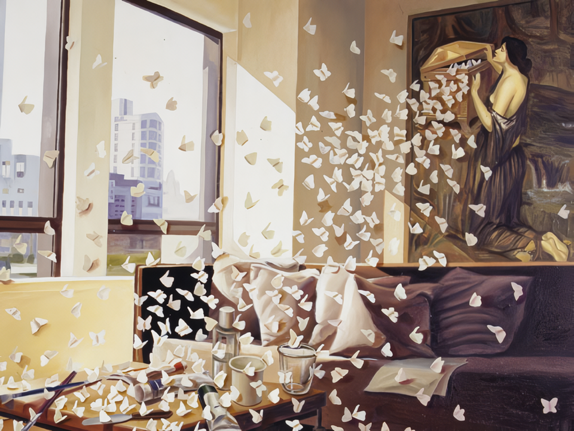
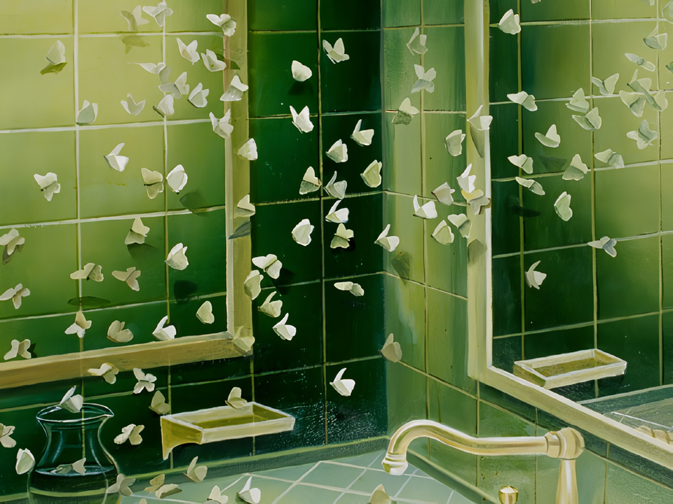
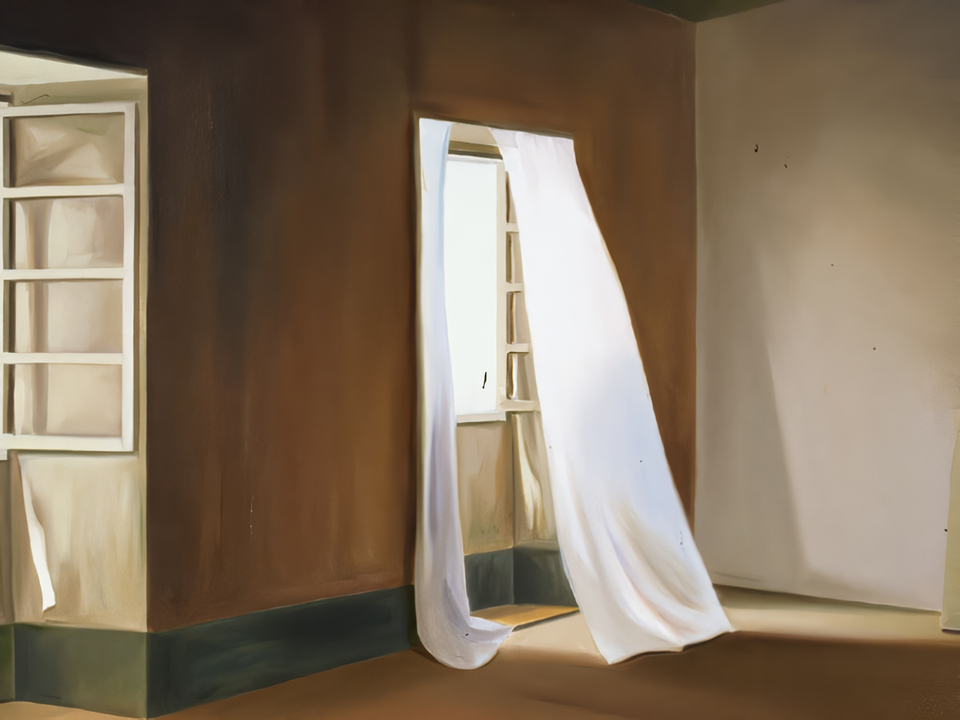
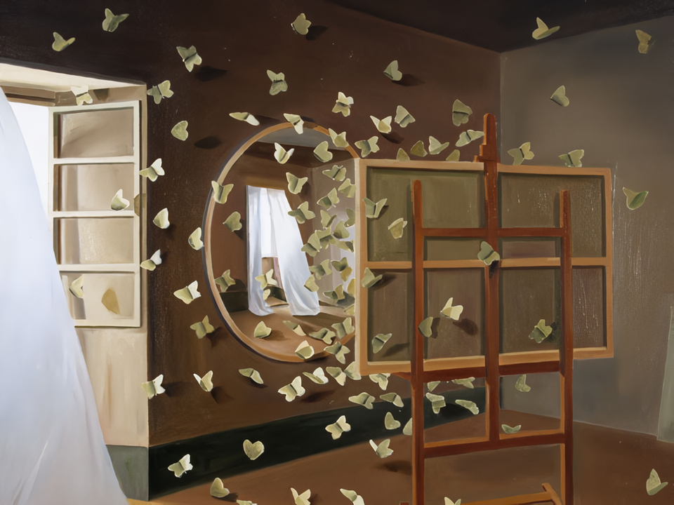
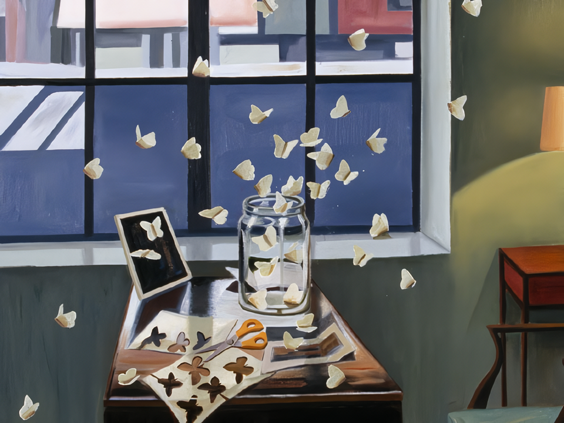
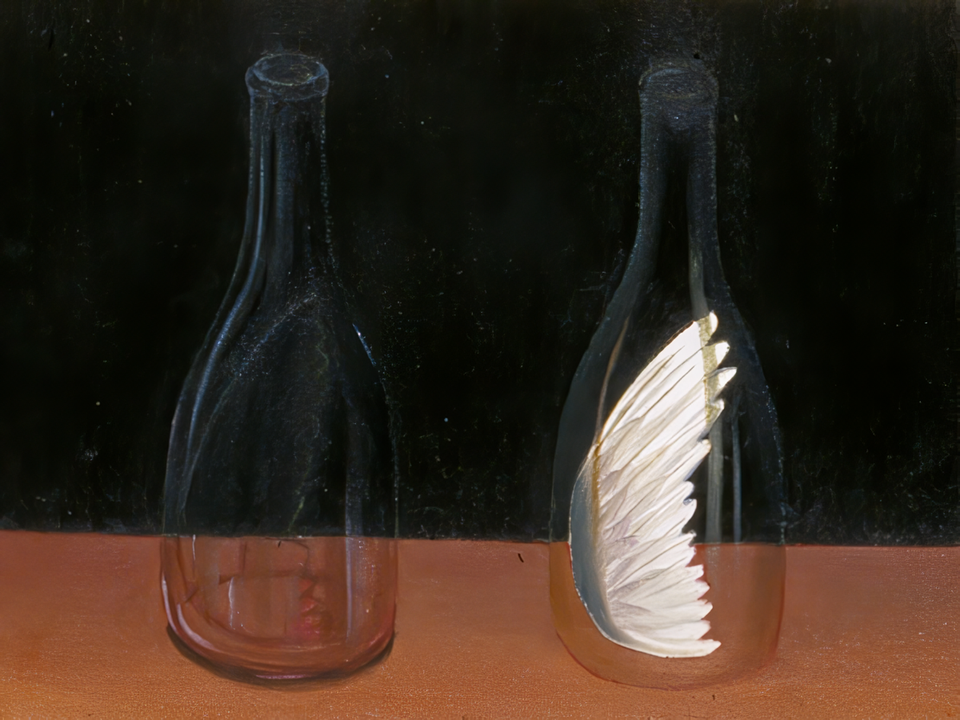
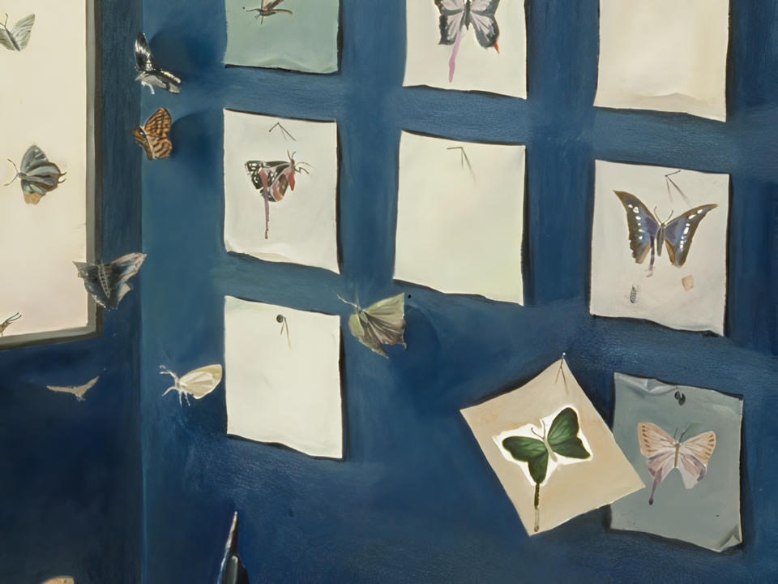

나비공간채집
2005 스톤앤워터 신진작가지원 프로그램 로칼놀이 프로젝트 II
2005_0414 ▶ 2005_0506

초대일시 / 2005_0414_목요일_04:00pm
2005 스톤앤워터 신진작가 지원展
후원 / 문예진흥원_경기문화재단
스톤앤워터
경기도 안양시 만안구 석수2동 286-15번지
Tel. +82.(0)31.472.2886
www.stonenwater.org
이번 전시는 보충대리공간 스톤앤워터가 2005년 기획한 『로칼놀이 프로젝트』의 하나로 안양출신 작가인 남경민의 개인전이다. '로칼놀이'란 지역을 의미하는 로칼(Local)과 열량, 에너지를 의미하는 칼로리(Calorie) 그리고 놀이(nori: play, 이때 플레이play는 '전시'의 의미를 가지고 있는 디스플레이display로도 의미가 확장 된다.)―이 세 가지 의미가 결합된 합성조어이다. 따라서 로칼놀이 프로젝트는 지역신진작가 발굴과 지역에서의 전시활동을 지원하는 프로젝트라 할 수 있다. 이를 위해 작년 여름에 포트폴리오 공모를 한 바 있고, 이 공모를 통해 남경민 씨를 비롯해 몇몇의 작가가 2005년 지원대상으로 선정되어 지금의 전시를 할 수 있게 되었다.
  
이러한 기획은 스톤앤워터가 지역을 기반으로 둔 전시공간으로써 지역미술이 안고 있는 문제-지역미술을 '결핍과 부족'이라는 코드로 읽을 경우, 스톤앤워터가 일정부분 '보충대리'한다는 개념에서 지역신진출신의 작가들에게 좀더 구체적인 대안이 되지 않겠는가라는 의도에서 출발한 것이었다. 또한 『로칼놀이 프로젝트』는 프로젝트이면서 프로그램으로 작가에 대한 지속적인 메니지먼트를 목표로 한다. 따라서 계속적으로 작가와 공간간, 작가와 작가간의 상호 교류, 접촉의 기회를 다양하게 가질 계획이다.
  
작가 남경민은 1997년 덕성여자대학교 대학원에서 서양화를 전공하고 , 1999년 담 갤러리, 2000년 조흥갤러리에서 개인전을 가진바 있다. 평면회화에서 공간의 문제를 거울, 창, 캔버스의 틀을 이용하여 초현실적으로 풀어가고 있는 작가는 2005년에는 스톤앤워터를 비롯해 브레인 팩토리, 한전플라자 갤러리의 신진작가로 선정되어 주목받고 있다. 이번 스톤앤워터 전시는 작가가 2000년부터 2005년까지 꾸준히 작업해온 미공개 유화작품 8작품이 소개된다. 나비를 모티브 삼아 펼쳐지는 남경민의 독특한 초현실적인 회화를 만나보길 바란다.
■ 스톤앤워터